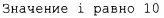

В <ostream> библиотека потока ввода-вывода определяет вывод для каждого встроенного типа. Кроме того, определить вывод пользовательского типа очень легко (§ 10.5). Оператор << используется как оператор вывода для объектов типа ostream; cout представляет собой стандартный выходной поток, а cerr - стандартный поток сообщений об ошибках. По умолчанию значения, записанные в cout, преобразуются в последовательность символов. Например, чтобы вывести десятичное число 10, можно написать
Этот код помещает символ 1, за которым следует символ 0, в стандартный выходной поток.
Точно так же можно записать
Вывод различных типов может быть скомбинирован обычным способом:
При вызове h(10) мы получим следующий вывод:
Программисты быстро устают повторять имя выходного потока при выводе нескольких связанных элементов. К счастью, для дальнейшего вывода может использоваться сам результат вывода. Например:
Вывод функции h2 () в точности такой же, как и функции h () .
Символьная константа представляет собой символ, заключенный в одинарные кавычки. Обратите внимание, что символ выводится именно как символ, а не как числовое значение. Например:
Целочисленное значение символа 'b' равно 98 (в кодировке ASCII, используемой в реализации С++, с которой я работаю), поэтому в данном случае мы получаем вывод а98с.